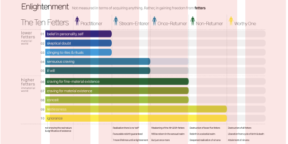

REFERENTE
What is Buddhism? · Information is Beautiful
Explica las principales creencias, conceptos y enseñanzas del budismo mediante una infografía visual.
Qué tomo
- Un color diferente para cada aplicación.
- Jerarquía visual para destacar los datos.
- Información agrupada e infografías con datos y porcentajes.